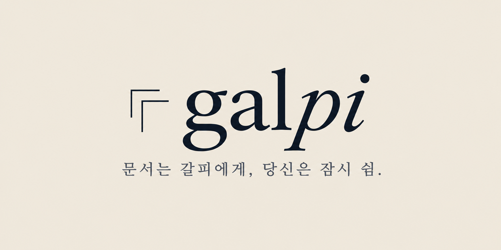

인수인계서
업무 현황부터 다음 할 일까지.
다음 사람에게 자연스럽게.
흩어진 메모도, 정리하지 못한 프로젝트도.
필요한 내용을 맡기고 문서 작업에 잠깐 책갈피를 꽂아두세요.
현재는 입력 내용을 문서 구조에 배치합니다. AI 재작성·회사 템플릿 적용·공유 링크는 연결 예정입니다.
기본 정리로 만든 초안입니다. 아래에서 자유롭게 수정하고, 사실·일정·담당자를 확인해 주세요.
PDF로 저장을 누르면 인쇄 창이 열립니다. 대상을 ‘PDF로 저장’으로 선택해 주세요.
처음부터 빈 페이지를 채우지 않아도 돼요.
필요한 문서의 시작점을 골라보세요.
업무 현황부터 다음 할 일까지.
다음 사람에게 자연스럽게.
반복하는 운영 절차를
누구나 따라 할 수 있도록.
시작의 이유와 과정, 결과를
한 흐름으로 기록하세요.
전달할 내용을 모으고
검토할 포인트를 분명하게.
이야기의 순서를 잡아보세요.
PPTX 출력은 추후 지원합니다.
메모, 업무 내용, 프로젝트 진행 상황.
완벽하게 정리해서 적지 않아도 괜찮아요.
누가 읽는지, 어떤 목적으로 쓰는지.
필요한 문서 종류와 제목을 정해주세요.
초안을 직접 다듬고 저장하세요.
중요한 사실은 마지막으로 확인해주세요.

갈피는 문서 작업의 부담을 덜고 싶은 다섯 명의 팀에서 시작했습니다. 시간이 부족한 동료에게, 빈 문서가 막막한 사람에게 작은 여유를 전하고 싶습니다.
문서는 갈피에게. 당신에게는 다음 일을 위한 쉼을.
현재 화면은 기본 정리 모드입니다. 입력한 내용을 선택한 문서 유형의 구조에 배치하며, AI가 분석하거나 재작성하지 않습니다. 실제 AI 생성은 서비스 연결 후 제공할 예정입니다.
TXT·MD 파일의 내용을 가져올 수 있습니다. 작성한 초안은 TXT로 내려받거나 브라우저 인쇄 기능으로 PDF로 저장할 수 있습니다. Word 다운로드와 PPTX 출력은 후속 기능입니다.
회사 양식과 로고를 문서에 적용하는 기능, 공유 링크 발급은 후속 연결 단계입니다. 현재는 문서 내용을 직접 수정하고 파일로 저장해 주세요.
이 페이지는 입력 내용을 외부로 전송하지 않습니다. 내용은 현재 화면에만 있으며 새로고침하면 사라지므로 필요한 초안은 파일로 저장해 주세요. 수업 실습에는 가상 자료를 사용해 주세요.